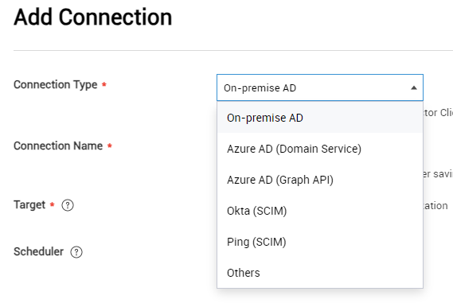
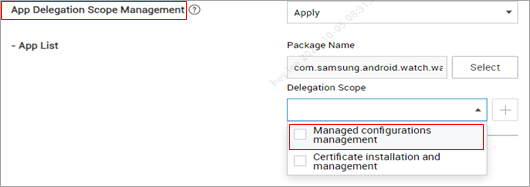

Knox Manage 23.12 release notes
Last updated December 6th, 2023
Enhancements to identity provider federated authentication
Previously, enterprises could use On-premise AD, or LDAP-based Azure AD (Domain Service) and Azure AD (Graph API) to sync user information with Knox Manage servers.
Starting in 23.12, Knox Manage also supports user authentication for Azure AD (Graph API) and supports both user sync and authentication for two additional identity providers — Okta and Ping Identity.

To set up user authentication, IT admins for the service providers must specify their information in the identity provider portals.
Azure AD (Graph API), Okta, and Ping Identity use the OIDC (OpenID Connect) authentication standard and support the following:
-
During device enrollment, user authentication is directly managed by the identity providers. Instead of the Knox Manage sign in UI, device users are routed to the respective identity providers for authentication.

-
Users must be set up in both the Knox Manage console and the identity provider portals.
-
Multi-factor authentication (MFA) is supported for enrolled devices.
Okta and Ping Identity support the SCIM (System for Cross-Domain Management) protocol. Knox Manage user and group information is automatically synchronized after specifying the settings for Okta and Ping Identity.
Since both LDAP and SCIM protocols are now supported, the Knox Manage console menu also reflects the following changes:
| Previous menu | New menu |
|---|---|
| Advanced > AD/LDAP Sync | Setting > Identity & Directory |
| Sync Service | Connection |
| Sync History | History |
| Advanced > Azure AD integration | - |
Support for macOS platform
Knox Manage 23.12 now supports macOS Ventura as a new platform for device enrollment and management. You can now enroll Macs using Apple Automated Device Enrollment (ADE). The following are supported for this release:
-
You can view device details related to Security, Device information, and Network.
-
You can use Volume Purchase Program (VPP) for public app management. The apps are synced with the Apple Business Manager (ABM) console. Apps supported by both iOS and MacOS are registered separately in the Knox Manage console, but share a single license.
-
You can use device commands to apply policies, similar to other platforms. The supported policies and device commands are:
Category Policies available System Camera Screen capture Manual installation for profile Factory reset USB restricted mode Security Passcode policies Passcode modification Screen unlock with Touch ID Touch ID timeout (min) iCloud Private relay Document synchronization Configurations Wi-Fi, Certificate Category Device commands available Device Push profile, Lock device, Factory reset, Power off device, Reboot device Knox Manage Unenroll device Device info. Sync device information, Sync installed app list
Improvements to Android Enterprise shared profiles
Previously, IT admins could apply only the staging device settings to a staging user. Moreover, the settings were limited to a smaller set of options as compared to other users.
With Knox Manage 23.12, you can now apply regular Android Enterprise profiles to staging users on shared devices. You can find the updated staging user profile settings at Profile > Kiosk & Staging > Staging Device Settings while managing profiles.

Important
IT admins must manually migrate existing staging devices to the new settings. To do so, on the Kiosk & Settings page, create a new profile for the staging user with the required settings. On the Setting > Configuration > Staging Device page, click Push Profile to apply the profile to the staging users, which automatically also updates the Knox Manage agent on the device to the 23.12 version. The Staging Device menu option is not available for new customers or for customers who do not have any enrolled staging devices, or if their staging devices are disconnected or their licenses expired.

Additionally, when setting up an APN for an Android Enterprise shared device, the APN policies now automatically apply to secondary users too. Previously, the APN policies were applied only to the staging user.
Interface policy renaming and updates to the Bluetooth policy
With Knox Manage 23.12, the Android Enterprise policy group Interface is renamed as Connectivity, on the Set Policy page.
Additionally, Data Transfer through Bluetooth is deprecated and no longer available. There is no change for existing configurations of the Data Transfer policy — it continues to apply to devices, but cannot be modified.
Moreover, the configurations previously available through the Data Transfer policy are now included in the Bluetooth Share policy. On saving the profile, IT admins are prompted to verify updates to the Bluetooth Share policy values. The following table shows how the Data Transfer policy values are mapped to Bluetooth Share policy values in Knox Manage 23.12.
| Data transfer policy value (Android 5 and higher) | Bluetooth Share policy value (Android 8 and higher) | Changes |
|---|---|---|
| Disallow | N/A, Allow, Disallow |
If Bluetooth Share policy is N/A or Allow, it is set as Allow. If Bluetooth Share policy is Disallow, it is turned off for devices running Android 8 and lower. |
| Allow | N/A, Allow, Disallow | No change. The Bluetooth Share policy continues to apply to devices. |
| N/A | N/A, Allow, Disallow | No change. The Bluetooth Share policy continues to apply to devices. |
New Android Enterprise policy for custom wallpaper
With Knox Manage 23.12, new Portrait and Landscape orientation options are available to better fit wallpapers on the screen. Previously, background images were resized to fit the screen, resulting in loss of image quality. For more information, see Application policies for Android Enterprise.

Updates to Android Enterprise policy for app restriction
With Knox Manage 23.12, the App Restrictions policies used to control app usage on devices are updated as follows:
| Policy | Description |
|---|---|
| App Execution Blocklist Setting | Use this policy to specify apps that are visible on the device screen but cannot be used by device users. |
| Hide App Setting | Use this policy to specify apps that must be hidden on the device screen. |

New Android Enterprise policy for Wi-Fi
Previously, for Android Enterprise devices, setting the Wi-Fi for the 802.1xEAP security type required IT admins to additionally specify a CA certificate and either the Domain or Alternate Subject.
With Knox Manage 23.12, for Android Enterprise devices running Android 13 and higher, including Wear OS devices if the Trust On First Use setting is selected, no additional settings are required. However, if Trust On First Use and the CA certificate and Domain are specified, the values for CA certificate and Domain take precedence.

Enhancement to Location policy for work profile devices
Previously, during enrollment of work-profile devices, location permissions were required by default, even if no location policy was set.
With Knox Manage 23.12, work profile devices do not require location permissions to be set unless location tracking policies are set.
-
If the location policy is set to Allow, device users are prompted to provide permission to enable location tracking on the device
-
If the location policy is set to User Consent, device location is tracked periodically and a non-dismissible notification is displayed on the device screen

New ID for AMAPI work profile devices
Starting in Knox Manage 23.12, AMAPI devices with work profiles are provided an Enrollment Specific ID upon enrollment. This ID is used in lieu of standard device identifiers, such as serial number and IMEI/MEID, which are restricted on work profile devices. You can view the Enrollment Specific ID in the Device Information tab on the Device Details page.

App Delegation Scope Management for Wear OS devices
Previously, managed configuration delegation scope was limited to Android OS only. With 23.12, Knox Manage now also supports some configuration management functionalities for devices running Wear OS 3.5 and higher.
The new delegated features, now available through the Managed configuration management option, are for Wi-Fi control and airplane mode control.

New Wear OS policies
With Knox Manage 23.12, new policies are available for Wear OS devices running Wear OS 4.0. The policies enable IT admins to control settings for sound and widget tiles on kiosks.
| New policy | Description |
|---|---|
| Sound Mode Settings | Specify whether users can change sound modes on the device |
| Sound Mode > Vibrate with Sound | Enable or disable the vibrate mode on devices when the Sound mode is set. Device users can’t change this setting |
| Widget Tile Settings | Specify whether to allow users to add or remove widget tiles from kiosks |
| Quick Panel & Notifications > Notification only | Select to display only notifications on kiosks |
Support for Windows Group Policy administrative templates
Microsoft’s Group Policy is a tool used to specify managed configurations in the Active Directory of Windows servers. Group policies are stored in administrative templates, which are XML files with the ADMX extension.
With Knox Manage 23.12, you can now populate group policies in the Knox Manage console using Administrative Templates. For example, you can configure device security by adding the administrative template for the Windows policy configuration for Microsoft Defender Antivirus.
To add an administrative template, go to Administrative template under Windows on the Set Policy page, click Add, and select the required administrative template. For more information, see Windows policies.

Ability to track Chrome OS devices in Brazil
Knox Manage 23.12 launches a new tracking service that enables you to efficiently monitor and account for your enterprise Chrome OS devices configured to the country code Brazil.
You can enable the tracking by installing a new dedicated Samsung Knox Manage extension available on the Chrome web store in Brazil. In the Knox Manage console, add the extension as an app and assign it to an organization. You can also force install the extension on enrolled devices.
You can review the location data of the devices from within the Knox Manage console. For more information, see Check the location of ChromeOS devices in Brazil.

New Windows policy for location data collection
With Knox Manage 23.12, a new Knox Manage agent policy — Allow Collecting Location Data — is available to control collection of location information during enrollment and as per the scheduled software inventory collection cycle.

Knox Asset Intelligence Integration with Knox Manage
Knox Manage 23.12 now supports Knox Asset Intelligence (KAI) for a more streamlined enrollment process. IT admins can deploy KAI from a single menu in the Knox Manage console.
Once integrated in the console, the KAI app automatically installs and grant permissions on the device. Information about the enrolled devices displays on the Device Details page.

For more information, see Enroll devices.
Enhancements for Kiosk devices
For improved security, IT admins can now use new kiosk policies to set the maximum number of times the device users can enter the exit code for exiting the Kiosk mode. On exceeding it, users are required to wait for 10 minutes or 30 minutes before trying to exit again.

Additionally, IT admins can choose to hide or show the information icon displays on the Kiosk screen.

Enhancement for sub-admin management
With Knox Manage 23.12, you can now allow sub-admins to access and manage reports.

Additionally, IT admins can also export the list of admins as an XLSX file.

For more information, see Add an administrator.
Updates related to license expiry
After a license expires, most Knox Manage features are restricted on devices. With Knox manage 23.12, the following additional changes apply to Android Enterprise devices after license expiry:
- Device inventory sync is restricted
- Day & Time event profile is restricted
- Knox Manage agent 23.09 and lower are now supported
Enhancements to device information
You can now search for devices using Integrated Circuit Card ID (ICCID) information on the Device page. ICCID information can also be displayed as a column in the device list table.
Additionally, the Device Details page now displays ICCID Information for eSIMs supported in iOS devices.

Updates to the Samsung Knox Custom Animation policy
Previously, the Samsung Knox Custom Animation policy was available only with the Knox Suite Premium license.
With the latest licensing changes, the policy is now available for all license types. The Premium icon  is now also removed from the UI in Knox Manage 23.12.
is now also removed from the UI in Knox Manage 23.12.
Terminology updates for Android Enterprise and Samsung Knox policies
With Knox Manage 23.12, the Android Enterprise and Samsung Knox policies are now updated as follows:
| Previous category | Previous policy name | New category | New policy name |
|---|---|---|---|
| System | System Update | System | System Updates |
| Automatic Date and Time | Date and Time | ||
| Interface | Wi-Fi Change | Connectivity | Wi-Fi Setting |
| Password | Password | Lock Screen | Screen Lock Policies |
| Minimum Complexity (Android 12 or later) | Set Minimum Complexity | ||
| Minimum Strength (Android 11 or earlier) | Set Minimum Strength | ||
| Minimum Number of Letters | Minimum Letters | ||
| Minimum Number of Non-Letters | Minimum Non-Letters | ||
| Minimum Number of Lowercase Letters | Minimum Lowercase Letters | ||
| Minimum Number of Capital Letters | Minimum Capital Letters | ||
| Minimum Number of Numeric Characters | Minimum Numeric Characters | ||
| Minimum Number of Special Characters | Minimum Special Characters | ||
| Maximum Number of Sequential Numbers | Maximum Sequential Numbers | ||
| Maximum Number of Sequential Characters | Maximum Sequential Characters | ||
| Password Lifecycle Settings (Android 6 or later) | Screen Lock Requirements | ||
| Password Expiration Timeout (Days) | Screen Lock Expiration (days) | ||
| When to Send Notification Before Expiration (Fully Managed) | Send Notification Before Expiration (Fully Managed) | ||
| Maximum Failed Login Attempts | Unlock Attempt Limit | ||
| If the Maximum Failed Login Attempts Are Exceeded (Fully Managed, Fully Managed with Work Profile) | Take Action If Attempts Are Exceeded (Fully Managed, Fully Managed with Work Profile) | ||
| If the Maximum Failed Login Attempts Are Exceeded (Work Profile) | Take Action If Attempts Are Exceeded (Work Profile) | ||
| Password Required Range (hours) | Screen Lock Timer (hours) | ||
| Password History | Screen Lock History | ||
| If Password Compliance is Violated | Screen Lock Compliance Violation | ||
| Maximum Screen Timeout | Maximum Screen Timeout Allowed | ||
| Kiosk | Set Application | Kiosk | Kiosk Package Name |
| App Auto Update | Automatic App Updates | ||
| File Upload | File Uploads | ||
| Text Copy | Copy Text | ||
| Utilities Setting | Utilities Settings | ||
| - Power | - Power Off | ||
| - Home | - Home Button | ||
| - Key Guard | - KeyGuard | ||
| JavaScript | Run JavaScript | ||
| HTTP Proxy | Use HTTP Proxy | ||
| Application | Installation of App from Untrusted Sources | App restrictions | Untrusted App Sources |
| System App Activation Setting | System App Reactivation Setting | ||
| Wi-Fi | Remove Available | Wi-Fi | Allow User to Remove the Network |
| Attempt Automatic Connection | Automatically Connect to the Network |
Policy menu changes for Android Enterprise and Samsung Knox
With Knox Manage 23.12, the Android Enterprise and Samsung Knox policy menu is now updated as follows:
| Policy | Previous category | New category |
|---|---|---|
| Developer mode | Samsung Knox > System | Android Enterprise > System |
| External SD Card | System | Connectivity |
| Screen Timeout | Security | Lock Screen |
| Maximum Screen Timeout Allowed | Security | Lock Screen |
The following Android Enterprise and Samsung Knox policy values are also updated:
| Policy | Previous values | New values |
|---|---|---|
| System > Camera |
|
|
| Connectivity > Wi-Fi |
|
|
| Connectivity > Bluetooth |
|
|
| Kiosk > Automatic App Updates |
|
|
Enhancements to admin invitations
Previously, two separate admin invitation emails were sent from Knox Admin Portal and Knox Manage on adding an admin. With Knox Manage 23.12, only one common invitation email will be sent from the Knox Admin Portal.
Additionally, predefined emails and SMS messages are sent in multiple languages based on the country code set in the Knox Manage console. Languages supported are — Korean, English, French, German, Italian, Portuguese, Spanish, and Polish. For all other country codes, English is used as the default language.
For more information, see Administrator account overview.
Terminology changes in the Knox Manage console
With Knox Manage 23.12, the following terminology updates are visible in the Knox Manage console:
| UI | Previous term | New term |
|---|---|---|
| Apply Profile | Push Profile | |
| Password | Screen Lock | |
| User page | User | Source |
| Organization page | User | Source |
| Profile page | Manage Control App | Manage System App |
| Android Enterprise EMM Registration Information page | Register | Link |
| Unregister | Unlink | |
| Chrome OS EMM Link Information page | Register | Link |
| Unregister | Unlink | |
| Device page | Last Updated | Status Last Updated |
Additionally, the following are also updated in the console:
-
On the Device Details page, the Last Connected information is now displayed as a tooltip on the Last Seen field.
-
On the User page, Apple VPP is added as a new search filter. In the Source column, Apple VPP is displayed as tooltip where applicable.
-
On the Group page, when you now delete a group, the changes are pushed to the group’s users immediately.
-
On the Audit Log page, you can now choose between Console, Server, and Device in the Audit Type field. Previously, the available values were Console/Server and Device.
Support for new OS Versions
With Knox Manage 23.12, the following latest operating system releases are supported:
- Android 14
- iOS 17
Support for Play Store app feedback
With Knox Manage 23.12, you can now receive feedback from apps on the Play Store related to download of apps specified in the allowlist and blocklist settings.
Improvement to default time zone setting
Previously, on creating a tenant the default time zone was set as GMT.
With Knox Manage 23.12, the default time is automatically set to the capital of the country where the tenant is created.
Security update for PII storage and search
This release delivers a significant update to Knox cloud infrastructure that further hardens how fields with personally identifiable information (PII) are stored. This update impacts how you can search for PII across all Knox services.
For the technical details about this update, as well as an up-to-date breakdown of how this affects Knox Manage, see Security notice regarding storage and search behavior for PII.
Back to release notesIs this page helpful?